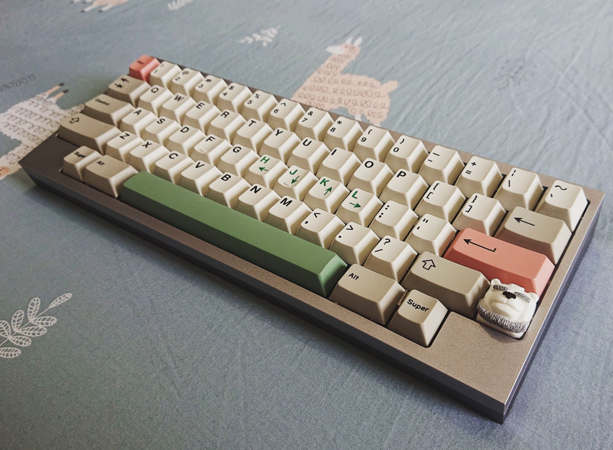

Like a lot of other mechanical keyboard enthusiast I had a modest start. The first mechanical keyboard I touched was a Razer Blackwidow that I tried in a shop. I was in awe. It was the first time I was laying my fingers on mechanical switches and I immediately told to myself that I had to get one.
At that time I had just finished college and I was about to leave Mauritius for my tertiary studies in France. I meditated for long that day on the idea to buy it on the spot but decided to wait till I got in France. A week later I found the Nightfox that was on Group Buy phase 4 on Input Club and decided to hop in.
The first time in my life that I had to wait 5 months to get a product I ordered, what a way to learn patience. Another 2 months later I was off in plane for France. There my new keyboard was waiting for me at my Aunt's place.
My first reaction was disappointment, yes you read that right. Preference was something I was not acquainted with at that time and the Halo Trues in my Nightfox were definitely no my gig. But I wasn't aware of that at the time and got used to the switches. But truth be told, I ended up liking my little Nightfox very much and used it for nearly 6 month until I decided that I wanted to change the keycaps.
Finding out r/MK
And here rabbit hole begins.
I begun scouting the web for a nice set of keycaps and as all of us at first, was baffled by the price tag of a good set of keycaps. I was sure not prepared to see some pieces of plastic cost as much as my first mechanical keyboard that, at that time, found already quite expensive.
On a side note, this hobby really changes us and our conception of the word "expensive".
I found out that my switches, having pre-retooled box stems, had a tendancy to "destroy" keysets to say the least. I was really disappointed and decided to sell the Nightfox.
I was now on my search for a suitable replacement and scouting r/MK and the internet I discovered MKBDFR, the French mechanical keyboard community. I joined it and got good advice for my replacement keyboard. Now with more knowledge aquired I decided to get myself a Tofu from KBDFan which I built with zealios v1 that I lubbed together with my girlfriend.
It never ends
You might think that getting my first real custom mechanical keyboard, I would stop there. I thought it too.
 Tofu HHKB & Epbt 9009 & Zealios v1It was also during that time that I got the chance to attend a meetup with other enthusiasts near Paris. Meeting people that share the same passion as you is truly an experience to live. I had a great time and learned a lot about my own switch preferences during those meetup.
I sold my Tofu nearly two month later and hopped in my first Group Buy, the Polaris. Writing on my journey now I realise how erratic it was because I sold my Polaris spot some time later to get a TGR X SINGA Unikorn, but that's a story for another time.
Fast Forward to now
Today I owned 6 keyboards in total and kept 3. My journey that had begun 3 years ago in a Computer Hardware shop has culminated in a passion like no other. I'm thankful to the French Community for the Friends I got to make at the meetups and making something as uncommon as Keyboards a hobby. For those interested in taking a look at the events or searching for advices, i'm dropping an invite link below.
MKBDFR Discord Invite